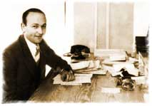

|
|
|
| Board Chairman from 1941 to 1946, Lilienthal oversaw the construction of 12 dams in five years, as TVA power helped win World War II. |
The Father of Public Power
Boyish in appearance but hardheaded and knowledgeable, David Lilienthal built the TVA power system according to one guiding principle: affordable power for everyone in the Tennessee Valley.
When people met TVA’s three original Directors, he was the one who looked out of place. Two of the triumvirate were white-haired academics. The third, and the last to join, was not yet 34—more than 20 years younger than either of his colleagues.
He looked even younger than that. During his first days at TVA in 1933, David Lilienthal was sometimes mistaken for an office boy. His youthful appearance belied his extensive experience and accomplishments.
|  |
|
The
Tennessee Valley owes its network of municipal and cooperative power
distributors to the vision of David Lilienthal, one of TVA’s
three original directors.
|
Born in the back of a small-town grocery store in Morton, Illinois, the son of a struggling Jewish family, Lilienthal grew up in Indiana with dreams of being a writer. He attended DePauw University, graduated when he was only 20, and went on to Harvard Law School. As a young lawyer he handled cases for the city of Chicago and, still in his twenties, developed a reputation for having a comprehensive understanding of public utility problems.
Through his litigation work for the city, Lilienthal came to believe there were some services so essential to modern day-to-day living that they must be made available and affordable for everyone.
In concert with other lawyers he helped win for the public a famous telephone rate case, Smith v. Illinois Bell Telephone Company, which required a 600-page brief and arguments before the U.S. Supreme Court. In 1931 he established and became the first director of the Wisconsin Public Service Corporation; that same year, he organized the Wisconsin Railroad Commission. His name began to be known across the country.
Appropriately enough for the man who’d be responsible for building so many reservoirs in the Tennessee Valley, the call to national service came by rowboat. Lilienthal was fishing on a lake in upper Wisconsin when a messenger rowed out to the island where he was staying and told him he had an urgent long-distance call from Arthur Morgan, the new Chairman of TVA.
On the phone in his fishing gear, the flabbergasted Lilienthal had the first of many arguments with Morgan. He found the job prospect exciting, he said, but he was on vacation and preferred to meet with Morgan sometime the following week. Informing Lilienthal that President Roosevelt himself had insisted that the two men meet as soon as possible, Morgan carried his point. They got together in Chicago the next day.
With Morgan, Lilienthal was frank about what he saw as his own shortcomings, especially his limited knowledge of engineering and his lack of a personal connection to the South.
But both Morgan and FDR knew that Lilienthal’s grasp of the way public utilities worked was excelled nowhere in the country. And having met him, Morgan was impressed by his forthrightness—though that quality would come back to haunt the Chairman.
Lilienthal was given the responsibility of organizing TVA’s power system. He took his family to Tennessee, eventually moving into a modest house in the new TVA company town of Norris. One of his neighbors, not a five-minute walk away, was Arthur Morgan himself. But by the time Lilienthal settled in Norris, the two weren’t getting along. They’d been fighting practically ever since Lilienthal arrived at TVA.
Privately, Lilienthal was something of a romantic. He was still an aspiring writer. He kept a personal diary and worried about crying at his children’s high school graduations. But next to Arthur Morgan, an aging college president with dreams of utopia, he seemed very much the hardheaded lawyer that he was in public.
Arthur Morgan wanted TVA to be little less than his own personal reinvention of Western civilization. Lilienthal thought that providing affordable power to all the people of the Valley should be the agency’s first priority.
This clash of personalities came to a head over TVA’s power policy. Chairman Morgan proposed that TVA enter into an agreement with the private utilities to distribute its power. Lilienthal the lawyer didn’t trust the private power companies; he felt that public power should be distributed publicly, through a network of local municipal power boards and rural co-ops. Lilienthal won the fight in 1938, when FDR fired his original Chairman.
Harcourt Morgan, the third TVA Board member (he was no relation to Arthur) became Chairman but held the post for only three years. In 1941, at the age of 75, he elected to step down and recommended that his young colleague Lilienthal be chosen to replace him.
With the United States on the brink of a world war, it was a crucial time and place, as Lilienthal understood. The federal government needed more energy for its war-effort industries, several of which were located in TVA’s power service area. Characteristically, Lilienthal took the reins and spurred TVA to the biggest building boom in its history.
Twelve dams went up during his five-year tenure as Chairman—a feat that has been called the largest engineering and construction project in the history of the U.S., exceeding even the Panama Canal.
Lilienthal’s career of public service continued after he left TVA at the end of the war. He had been involved in the siting of the top-secret Oak Ridge, Tennessee, facilities that, driven by TVA power, helped build the atom bomb. Now he directed the State Department’s postwar assessment of nuclear power and advised that control of this enormous force should be international, resting in the hands of no single nation, not even the United States.
Impressed by Lilienthal’s grasp of the subject, President Truman appointed him the first chairman of the Atomic Energy Commission, which managed the peacetime use of nuclear power. Later he served as a consultant and as chairman of the international Development and Resources Corporation, working on projects in Colombia, Peru, Brazil, Iran, and Vietnam.
Lilienthal returned to the Valley more than once to reminisce with old friends and talk about the future. His last visit occurred in 1979, 20 months before his death, when he went to Norris for a reunion.
Despite the turbulent battles with Morgan and the round-the-clock stress of wartime dam-building, TVA had retained a special place in Lilienthal’s heart. He took pride in TVA’s role in the war effort and in its rock-solid dedication to public power. On his final visit, reviewing all the milestones of his adventurous career, he spoke of his 13 years at TVA as “the happiest years of my life.”

|
TVA
History The
Past in the Present |
||